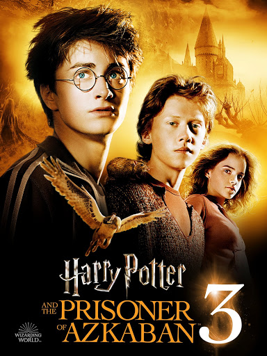
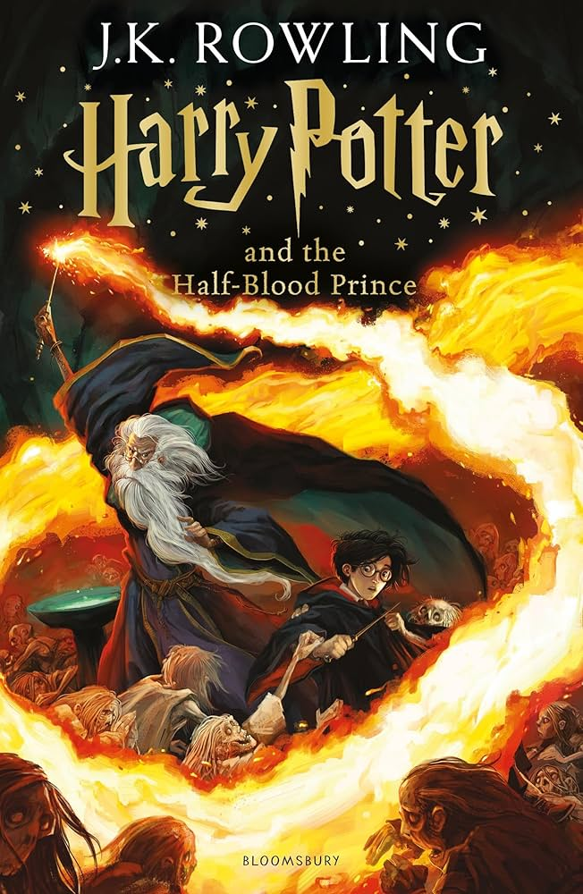
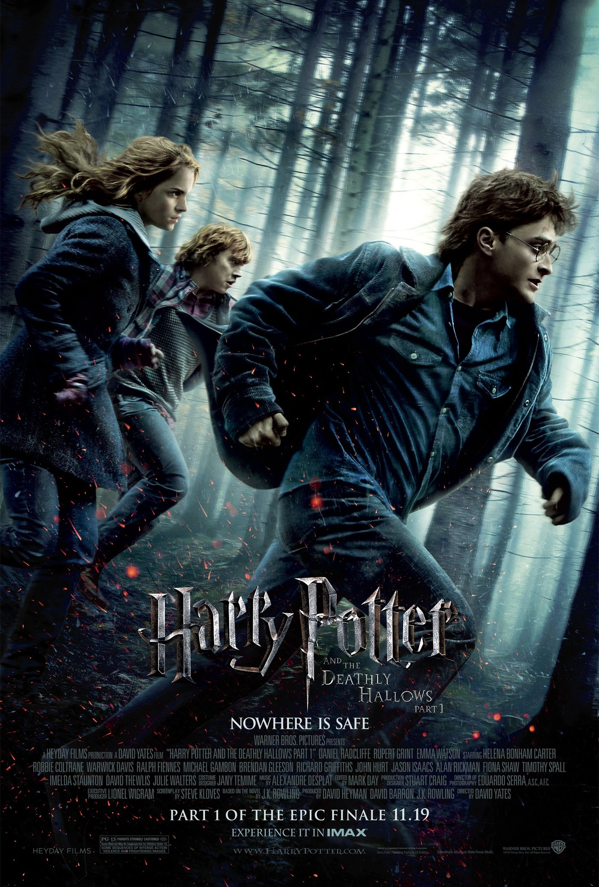

Harry Potter and the Prisoner of Azkaban

Why it’s loved: Introduces crucial backstory — Sirius Black, the Marauders, and deepens Harry’s relationship with the parents he never knew. SparkNotes +3 GradeSaver +3 Wikipedia +3 Plot snippet: The wizard prison Azkaban’s most notorious inmate, Sirius Black, has escaped. Everyone believes he’s after Harry. As darker forces close in, Harry and his friends uncover painful truths about betrayal, friendship, and sacrifice
GET IT NOW!Harry Potter and the Goblet of Fire

Why it’s loved: Expands the wizarding world (with the Triwizard Tournament, international schools). Also marks a shift toward darker themes. Wikipedia +3 Wikipedia +3 SparkNotes +3 Plot snippet: Against his will, Harry is entered into the dangerous Triwizard Tournament. As he competes in several perilous tasks, he realizes there’s something sinister afoot at Hogwarts — and that the stakes are higher than ever
GET IT NOW!Harry Potter and the Half-Blood Prince

Why it’s loved: Reveals more of Voldemort’s past and deepens emotional stakes. Also includes heartbreak and betrayal. Medium +3 Wikipedia +3 SparkNotes +3 Plot snippet: As dark times spread, Harry and Dumbledore explore Voldemort’s origins. Harry also discovers a mysterious textbook marked by the “Half-Blood Prince,” whose identity and secrets carry great consequence. The book leads to a tragic turning point in the war against evil.
GET IT NOW!Harry Potter and the Deathly Hallows

Why it’s loved: The epic conclusion. Ties up many threads, reveals hidden truths, and delivers the final battle of good vs. evil. LitCharts +3 Wikipedia +3 GradeSaver +3 Plot snippet: Harry, Ron, and Hermione leave Hogwarts behind to find and destroy the remaining Horcruxes. Along the way, they uncover the meaning of the Deathly Hallows, face loss, betrayal, and make sacrifices for the greater cause. The fate of the wizarding world hinges on their choices
GET IT NOW!